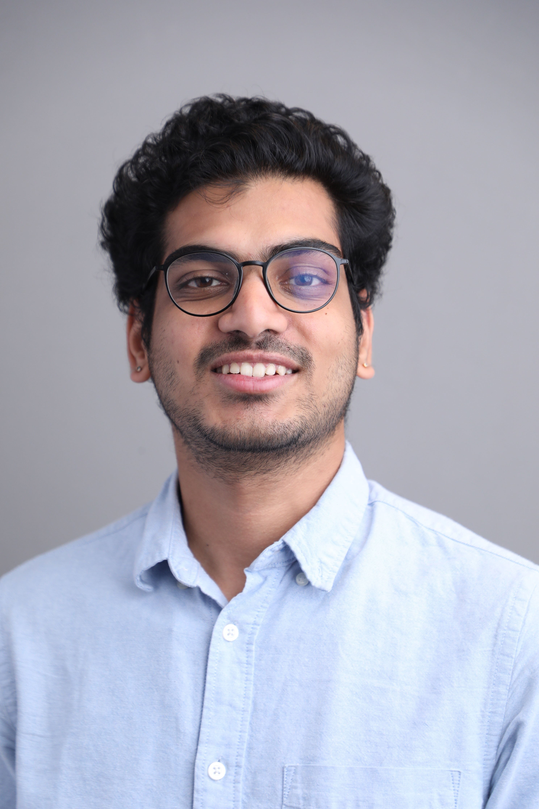

Sai Ashish Somayajula
Senior Applied Scientist at Oracle AI
I am a Senior Applied Scientist at Oracle AI, building enterprise data agents that turn structured data into trusted business insight. At the core is an ontology-driven semantic store that maps entities, metrics, relationships, and domain rules onto enterprise data, giving agents the context to understand business intent. This semantic layer is the foundation of our NL2SQL system — the system I co-led to the #1 Archer NL2SQL 2025 win and #1 Spider 2.0 Lite result, two of the most competitive enterprise NL2SQL benchmarks. Building on this retrieval foundation, I focus on agents that reason over evidence, detect patterns, and surface insights proactively, moving toward a future where LLMs help humans understand their data, not just query it.
I hold a PhD from the ECE department at University of California, San Diego, where I was advised by Professor Pengtao Xie and received the 2025-2026 Dr. William S.C. Chang Best Dissertation Award. My thesis investigated how to adapt large language models to specialized, high-stakes domains where data is scarce, distributions shift over time, and output attribution is critical. Working across healthcare and biology, I developed techniques spanning synthetic data generation, continual learning, and watermarking, with the long-term goal of models that domain experts can rely on to reason over complex domain specific data.
I obtained my Bachelor's degree in Electrical Engineering with a minor in Computer Science and Engineering from the Indian Institute of Technology, Hyderabad. I was fortunate to be advised by Professor Sumohana S. Channappayya and Professor Adity Siripuram. I secured the second-highest CGPA in the B.Tech program across all departments and was twice awarded the academic excellence award.
Email CV Google Scholar LinkedIn GitHub
Feel free to reach out to discuss ideas. I'd be glad to connect and brainstorm together.

Recent Highlights
All news- June 2026: Deeply honored to receive the 2025-2026 Dr. William S.C. Chang Best Dissertation Award from the UC San Diego ECE Department.
- May 2026: Recognized as a Gold Reviewer for ICML 2026.
- April 2026: Our SOMA-SQL system topped the Spider 2.0 Lite leaderboard.
- October 2025: OraPlan-SQL secured 1st place in the 2025 Archer NL2SQL Challenge.
- June 2025: Completed my PhD at UC San Diego; thesis available [PDF].